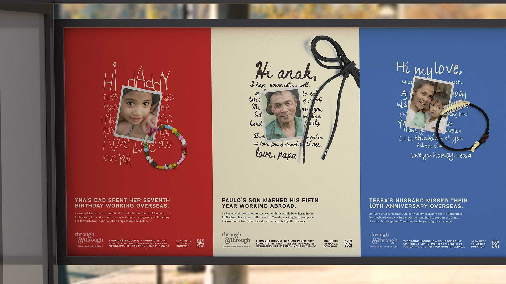
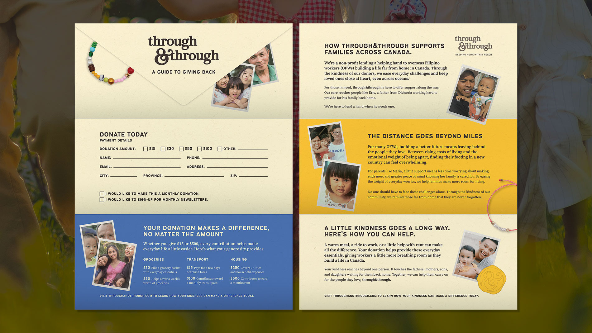
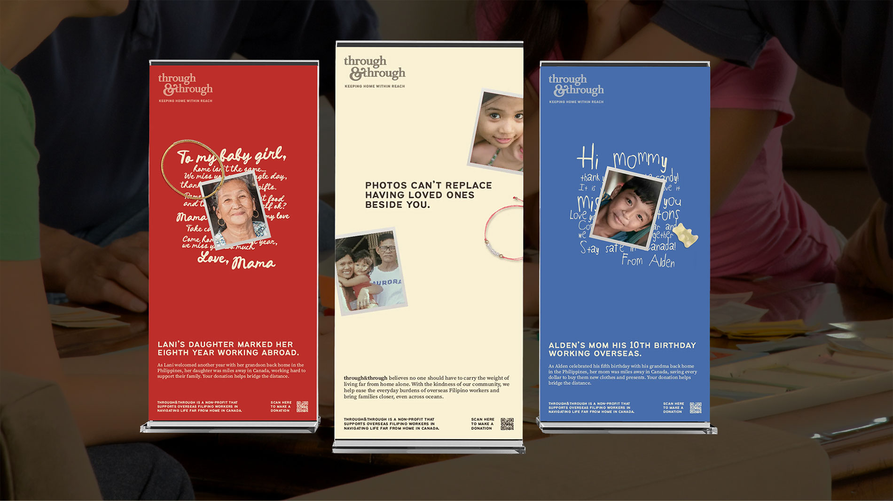
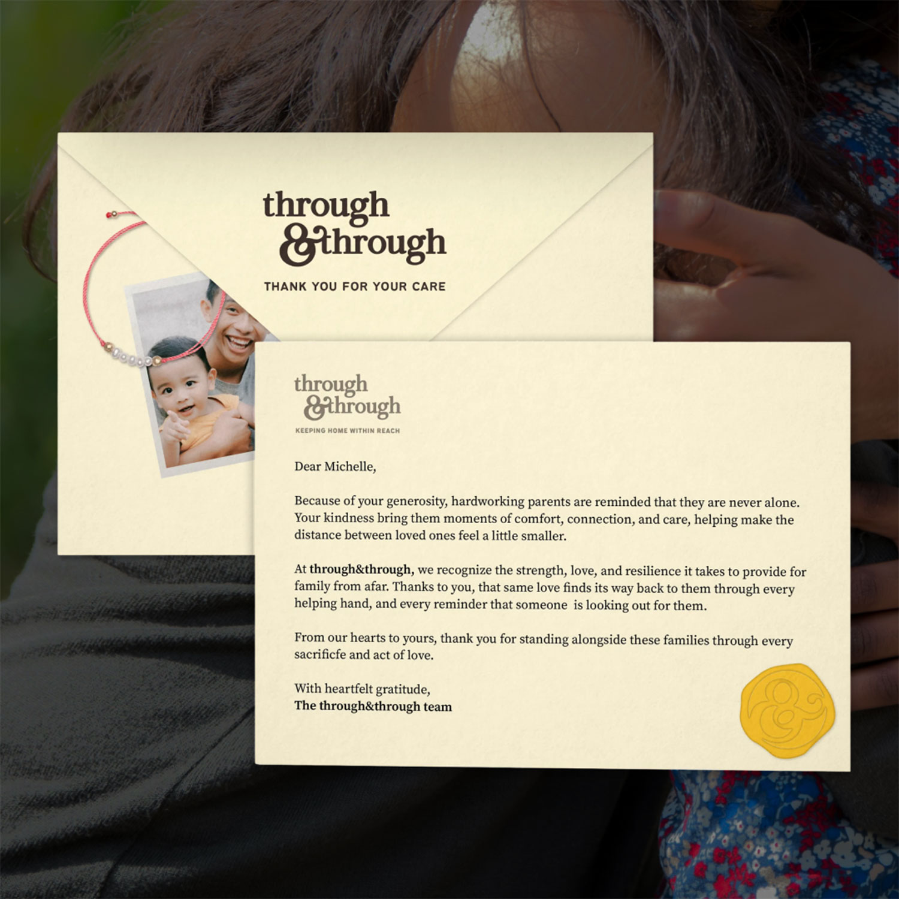
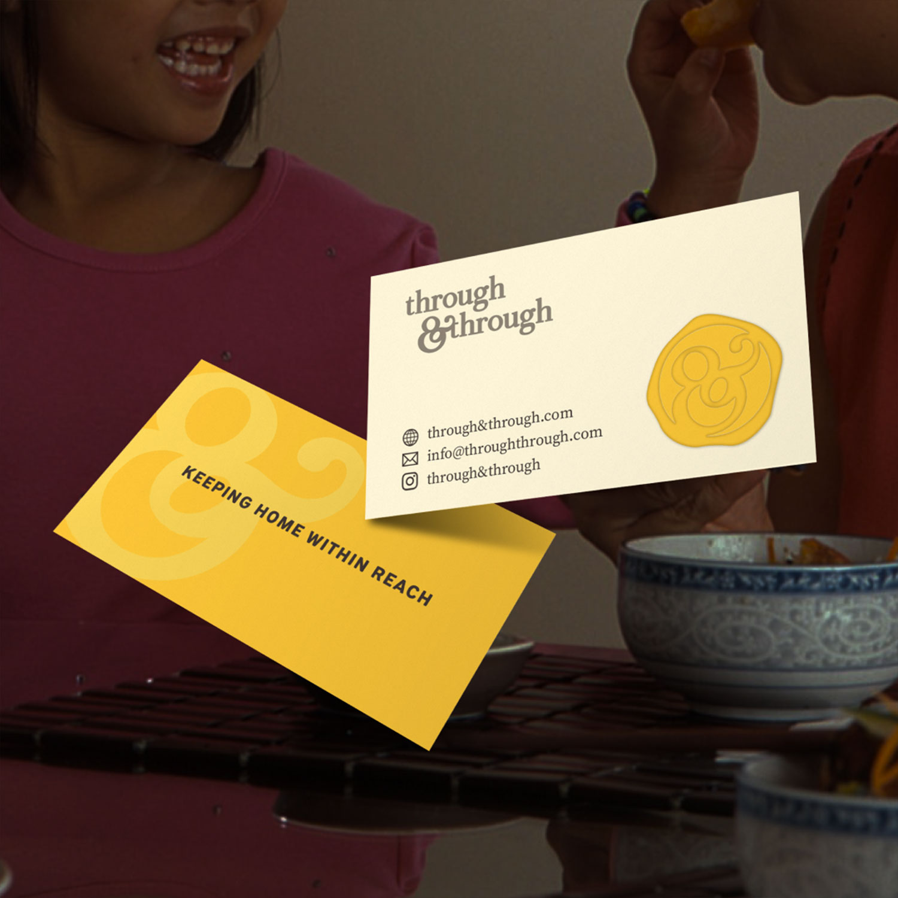

SOCIAL CAUSE𖡼𖤣𖥧𖡼𓋼𖤣𖥧𓋼𓍊BRANDING𖡼.𖤣𖥧𖡼.𖤣𖥧FUNDRAISING CAMPAIGN𖡼𖤣𖥧𖡼𓋼𖤣𖥧𓋼𓍊ADVERTISING𖡼.𖤣𖥧𖡼.𖤣𖥧
KEEPING HOME WITHIN REACH
through&through is a non-profit supporting overseas Filipino workers (OFWs) in Canada as they navigate the challenges of living far from home. Through a donor campaign rooted in distance and longing, the project raises awareness of the sacrifices made by Filipino families living apart.
By combining heartfelt messages from loved ones with thoughtfully cropped photography and intentional white space, through&through encourages empathy, inspires support, and helps keep families connected, even across oceans.
The research and ideation was completed in collaboration with Crescille Buyuccan.
For many Filipino families, separation is a reality that they shoulder in an efforts to pave a path for a better future for those they love. While these years of sacrifice is a story that many in the community hold, it's one that often goes untold.
The purpose of this campaign is to share these stories to larger audiences while pulling on the universal feeling of missing a loved one.


Potential donors can learn more about the program through our informational pamphlets that allow them to donate on the spot. The process is easy and transparent while outlining what your difference means to families.



As a first-generation Filipino-Canadian, this project honours the sacrifices my parents made to build a better future for our family while supporting loved ones back home. Reading personal stories and speaking with Filipino friends taught me the importance of listening to the communities I design for and representing their experiences with care.
Through through&through, I hope Filipino families feel less alone in their sacrifices while inspiring others to lend a helping hand.
𖡼𖤣𖥧𖡼𓋼𖤣𖥧𓋼𓍊 FUN FACT: WATCHING "MAPLE LEAF DREAMS" WAS A PIVOTAL MOMENT IN OUR RESEARCH𖡼.𖤣𖥧𖡼.𖤣𖥧
With every project I scrounge up and every tale I weave, there’s one
thing at the heart of it all: creating for the everyday person and the
communities they call home.